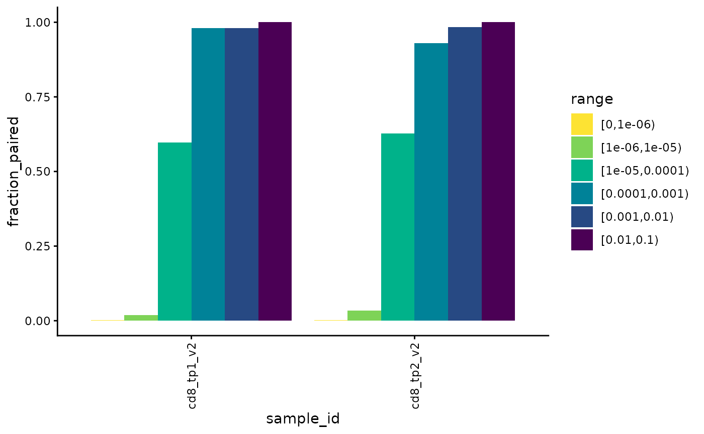
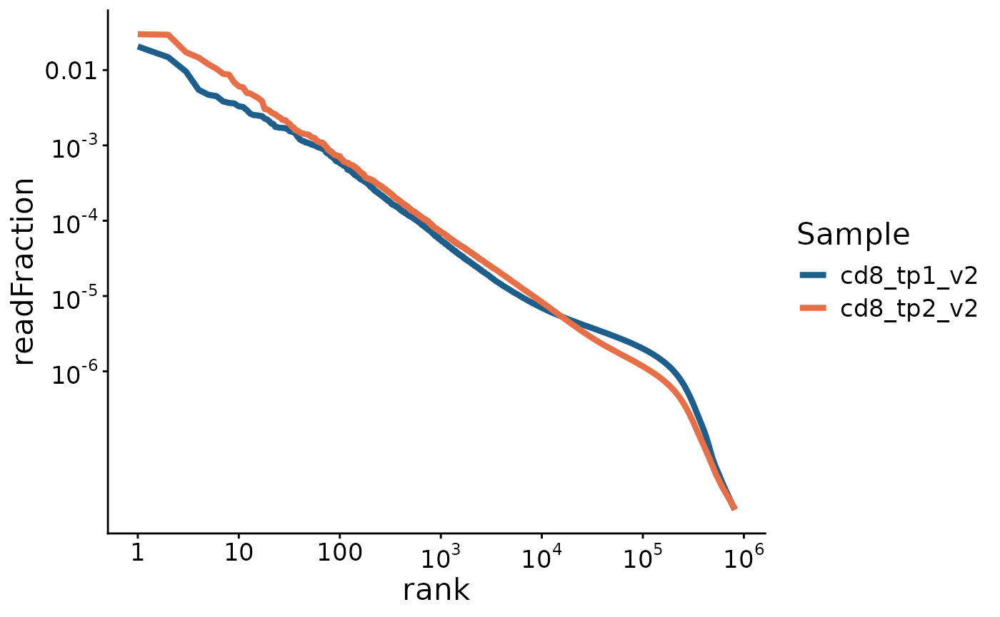
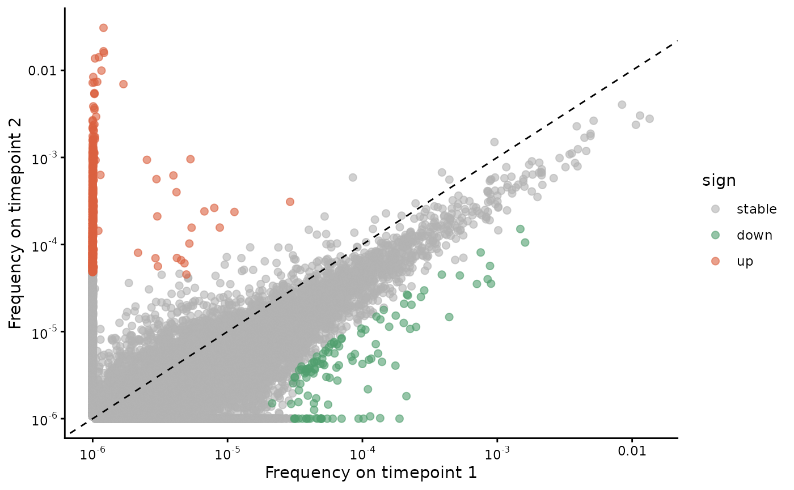

Plot examples
plot_examples.Rmd## Error in system("nvidia-smi", intern = TRUE, ignore.stderr = TRUE) :
## error in running command
folder = download_dataset("SJTRC_TIRTLseq_minimal", folder = tempdir())## Downloading file: cd8_tp1_v2_TIRTLoutput.tsv.gz to directory: /tmp/RtmpTXJ5Bp
## Downloading file: cd8_tp1_v2_pseudobulk_TRA.tsv.gz to directory: /tmp/RtmpTXJ5Bp
## Downloading file: cd8_tp1_v2_pseudobulk_TRB.tsv.gz to directory: /tmp/RtmpTXJ5Bp
## Downloading file: cd8_tp2_v2_TIRTLoutput.tsv.gz to directory: /tmp/RtmpTXJ5Bp
## Downloading file: cd8_tp2_v2_pseudobulk_TRA.tsv.gz to directory: /tmp/RtmpTXJ5Bp
## Downloading file: cd8_tp2_v2_pseudobulk_TRB.tsv.gz to directory: /tmp/RtmpTXJ5Bp
#folder = system.file("extdata/SJTRC_TIRTLseq_minimal", package = "TIRTLtools")
sjtrc = load_tirtlseq(folder, compress_strings = FALSE)## 13.994 sec elapsed
sjtrc = TIRTL_process(sjtrc, clean = FALSE)## Adding single-chain data to paired dataframe for sample 1
## Adding single-chain data to paired dataframe for sample 2
##
## Annotating data with pairing status by MAD-HYPE and T-SHELL algorithms for sample 1
## Annotating data with pairing status by MAD-HYPE and T-SHELL algorithms for sample 2
top_clones1 = sjtrc$data$cd8_tp1_v2$beta %>% arrange(desc(readFraction)) %>% head(5) %>% extract2("targetSequences") %>% as.character()
top_clones2 = sjtrc$data$cd8_tp2_v2$beta %>% arrange(desc(readFraction)) %>% head(5) %>% extract2("targetSequences") %>% as.character()
plot_clone_size_across_samples(sjtrc, clones = c(top_clones1, top_clones2), chain = "beta")
plot_clonotype_indices(sjtrc)
div = calculate_diversity(sjtrc, chain = "beta", metrics = "d50")##
## -- Calculating diversity indices for sample 1 of 2.
## -- Calculating diversity indices for sample 2 of 2.
plot_diversity(div, metric = "d50")
plot_n_reads(sjtrc)
plot_num_partners(sjtrc)
plot_paired(sjtrc)
plot_paired_by_read_fraction_range(sjtrc, chain = "beta")
plot_paired_vs_rank(sjtrc, sample = 1)
plot_pairs_with_eachother(sjtrc, sample = 1)
plot_ranks(sjtrc)
plot_read_fraction_vs_pair_status(sjtrc, sample = 1)
plot_sample_overlap(sjtrc, chain = "beta")
plot_sample_vs_sample(sjtrc$data$cd8_tp1_v2, sjtrc$data$cd8_tp2_v2)